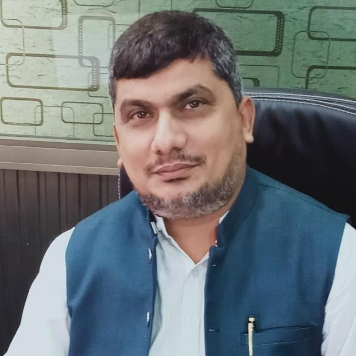

Prof. Dr. Aftab Hameed Memon
Professor of Civil Engineering
Department of Civil Engineering / Civil Engineering Technology
Quaid-e-Awam University of Engineering, Science & Technology (QUEST), Nawabshah, Sindh 67480, Pakistan
Email: aftab@quest.edu.pk | aftabm78@hotmail.com
PEC Reg: CIVIL / Professional Engineer (Pakistan Engineering Council)
Education
Doctor of Philosophy (Ph.D.) in Civil Engineering / Construction Management
2010 – 2014
Universiti Tun Hussein Onn Malaysia (UTHM), Johor, Malaysia
Dissertation: STRUCTURAL MODELLING OF COST OVERRUN FACTORS IN CONSTRUCTION INDUSTRY.
Master of Science (M.S.) in Construction Management
2004 – 2005
Universiti Teknologi Malaysia (UTM), Skudai, Johor, Malaysia
Thesis: RESOURCE-DRIVEN SCHEDULING: BARRIERS TO IMPLEMENTATION.
Bachelor of Engineering (B.E.) in Civil Engineering
1997 – 2001
Quaid-e-Awam University of Engineering, Science & Technology (QUEST), Nawabshah, Pakistan
Graduated First Class with Honors.
Academic Appointments
Professor
2022 – Present
Department of Civil Engineering, QUEST Nawabshah, Pakistan
Directing postgraduate research in Construction Project Management, supervising Ph.D. dissertations, and teaching advanced courses in quantitative risk modeling.
Associate Professor & Chairman
2018 – 2022
Department of Civil Engineering Technology, Faculty of Technology, QUEST Nawabshah
Led academic administration, curriculum enhancement, laboratory modernization, and PEC accreditation procedures.
Assistant Professor
2014 – 2018
Department of Civil Engineering, QUEST Nawabshah
Delivered undergraduate courses, coordinated departmental quality enhancement cells (QEC), and formulated research proposals.
Lecturer
2007 – 2014
Department of Civil Engineering, QUEST Nawabshah
Industrial Engineering Experience
Project Coordinator
2005 – 2007
Osmani & Company (Pvt.) Ltd. Consulting Engineers, Pakistan
Supervised highway, structural, and infrastructure contract administration, milestone progress tracking, and client billing certification.
Assistant Planning Engineer
2002 – 2004
Paragon Constructors (Pvt.) Ltd., Pakistan
Responsible for master scheduling, resource leveling using Primavera, cost estimation, and variation orders for commercial projects.
Research Specializations & Scientific Thrusts
- Construction Cost & Time Overrun Risk Modeling: Developer of the Weighted Risk Assessment Tool for Time and Cost Overrun (WRATTCO).
- Structural Equation Modeling (PLS-SEM & AMOS): Advanced empirical analysis of multivariate project management interrelationships.
- Sustainable Construction & Circular Economy: Solid construction waste management, life-cycle carbon assessment, and green building certification barriers.
- Lean Construction & Modern Site Management: Implementation of Last Planner Systems, 5S, and BIM-enabled digital project tracking.
- Contract & Organizational Management: Project delivery systems, contract claim evaluation, dispute avoidance, and organizational leadership in construction.
- Building Materials & Concrete Technology: Bio-based self-healing concrete using indigenous precursors, high-strength self-compacting concrete, and supplementary cementitious materials (RHA).
- Qualitative & Quantitative Analysis: Multi-criteria decision analysis (TOPSIS), survey instrument reliability validation, and mixed-method empirical methodologies.
Competitive Research Grants & Funded Projects
- Rs. 6.49 Million (08/2024 – 07/2026) — "Development of Low-Cost Bio-Based Self-Healing Concrete Using Indigenous Materials for Sustainable and Durable Infrastructure in Pakistan". Principal Investigator. Sponsoring Agency: Higher Education Commission (HEC) Pakistan, National Research Program for Universities (NRPU). [Active Grant]
- Rs. 1.00 Million (08/2017 – 12/2023) — "Decision Support System for Improving Project Performance". Principal Investigator. Sponsoring Agency: Quaid-e-Awam University of Engineering, Science & Technology (QUEST), Nawabshah. [Completed]
- RM 114,000 (04/2013 – 04/2016) — "WRATTCO: Web-based Risk Assessment Technique for Time and Cost Overrun". Key Researcher & Developer. Sponsoring Agency: Ministry of Higher Education (MOHE), Malaysia (Exploratory Research Grant Scheme - ERGS). [Completed]
- RM 82,400 (04/2013 – 04/2016) — "A Novel Approach in Triggering, Assessing and Controlling Construction Waste Generation Throughout the Construction Lifecycle". Co-Investigator. Sponsoring Agency: Ministry of Higher Education (MOHE), Malaysia / UTHM. [Completed]
Honors, Inventions & Research Awards
- 2014: Best Invention Award (Silver Medal) — 25th International Invention, Innovation & Technology Exhibition (ITEX14), Kuala Lumpur Convention Centre (KLCC), Malaysia (8–10 May 2014).
- 2014: Best Invention and Innovation Award (Bronze Medal) — Malaysian Technical Exhibition (MTE14), organized by Malaysian Association of Research Scientists (MARS), Malaysia.
- 2013: Best Research Product Award (Gold Medal & Cash Prize of RM 1,000) — Research and Innovation Competition (R&I 2013), Universiti Tun Hussein Onn Malaysia (UTHM) (19–20 December 2013).
- 2013: Best Fundamental Innovative Research Award (Bronze Medal) — Research and Innovation Competition (R&I 2013), Universiti Tun Hussein Onn Malaysia (UTHM).
- 2012: Best Paper Award (3rd Place, Bronze Medal & Cash Prize of RM 300) — Malaysian Technical Universities Conference on Engineering & Technology (MUCET 2012), Perlis, Malaysia (20–21 November 2012).
- 2010: PhD Scholarship under International Scholarship Scheme (2010–2013) — Awarded fully funded international doctoral fellowship by Universiti Tun Hussein Onn Malaysia (UTHM).
- 2003: Performance Award as Junior Engineer — Paragon Constructors (Pvt.) Ltd., Pakistan.
Academic Teaching & Courses Taught
Postgraduate Courses (Master's & Ph.D.)
- CE812: Engineering and Construction Contracts Management
- CE814: Quality Management and Construction Performance
- CE811: Sustainable Construction Management
- CV812: Software Application in Civil Engineering
- CE501: Project Planning and Construction Management
- CE506: Contract Management in Construction
- CE507: Construction Risk Management
Undergraduate Courses (B.E. Civil Engineering / BS Civil Engineering Technology)
- CE403: Quantity Surveying & Estimation for Civil Works
- CE201: Strength of Materials-I
- CE254: Mechanics of Solids
- CE358: Professional Ethics For Technologist
- CE421: Entrepreneurship
- Core: Project Planning and Construction Management
- Core: Construction Planning, Project Management and Economics
Postgraduate Research & Thesis Mentorship
Ph.D. Dissertation Supervision
- Developing Assessment Tool for Quality Management in Construction Projects of Pakistan [On Going]
- Integrating Predictive Analytics and Machine Learning Models for Proactive Construction Risk Management: A Case Study Approach [On Going]
- Climate-Resilient Urban Construction Planning in Pakistan [On Going]
- Framework for Improving Pavement Performance to Control Traffic Accidents Caused by Distresses in Metropolitan City Karachi, Pakistan [Completed in 2025]
- Decision Support System for Improving Project Performance [Completed in 2023]
- Relationship Of Cause And Effect Of Changes To Construction Project Performance: UAE Construction Industry [Completed in 2021]
- Modeling the Factors of Cost Overrun in Building Construction Projects of UAE [Completed in 2021]
Master's (M.S.) Theses Supervised (Over 50 Completed)
- A Risk-Based Construction Management Framework for New Building Projects within Operational Hospitals [On Going]
- Evaluation Of Resource Constraints And Disbursement Delays In SPHF Housing Reconstruction [On Going]
- Improvement of Client-Consultant-Contractor Communication in Construction Projects in Sindh, Pakistan [Completed in 2026]
- Impact of Human Resource management practices on Employee Satisfaction and Project Performance: A case study of Remote Construction Projects [Completed in 2026]
- Assessing Relationship Of Profitability Indicators With Project Success Metrics In Construction Organizations Of Pakistan [Completed in 2025]
- Factors Contributing To The Loss Of Equipment Productivity In Highway Construction Projects In Pakistan [Completed in 2024]
- Framework For Enhancing The Usage Of It Tools For Improving Project Performance [Completed in 2024]
- Examining The Impacts Of Employee Empowerment On Organizational Performance Within The Construction Industry Of Pakistan [Completed in 2024]
- E-Procurement Practices in Construction Industry of Sindh: A Comparison of Public Sector Departments and Contractors [Completed in 2024]
Professional Affiliations & Registrations
- Registered Professional Engineer (P.E.): Pakistan Engineering Council (PEC)
- Corporate Member: Concrete Society Malaysia (CSM)
- Member: Malaysian Society for Engineering and Technology (MSET)
- Member: International Association of Engineers (IAENG)
- Peer Reviewer: ASCE Journal of Construction Engineering and Management; International Journal of Project Management; Construction Management and Economics.
Institutional Leadership & Academic Governance
- Chairman & Department Lead: Led the Department of Civil Engineering Technology at QUEST Nawabshah. Orchestrated the successful adoption of Outcome-Based Education (OBE) for NTC accreditation, established modern CAD/BIM laboratories, and launched industry-faculty panels.
- Focal Person for Continuous Professional Development (CPD): Directing CPD-accredited technical seminars, short courses, and engineer training programs at QUEST under PEC standards.
- Outcome Based Education (OBE) Coordinator for PEC Accreditation: Spearheading Program Learning Outcomes (PLOs), CQI cycles, and audit readiness for PEC / Washington Accord accreditation.
- Member of Board of Studies: Modernizing undergraduate and postgraduate curricula, course outlines, and laboratory standards in Civil Engineering.
- Member for Board of Faculty: Contributing to faculty-level strategic governance, postgraduate regulations, and institutional policies.
- Coordinator for Final Year Project (FYP) of Undergraduate Program: Managing capstone engineering thesis allocations, external evaluations, and defense juries.
- Focal Person for Industrial Liaison: Driving institutional partnerships with leading construction firms, internships, and collaborative research.
Continuous Service & Editorial Leadership
- Invited Peer Reviewer for 20+ International Q1/Q2 Journals: ASCE Journal of Construction Engineering and Management, International Journal of Project Management (Elsevier), Construction Management and Economics (Taylor & Francis), and Sustainability (MDPI), among others.
- Editorial Member in 5+ Journals: Active editorial board member for international peer-reviewed journals, supervising review workflows and thematic issues.
- Advisory Board Member in Several Journals & International Conferences: Providing scientific oversight and program committee leadership for international symposiums and technical periodicals.
Workshops, Keynotes & Professional Trainings
- Keynote Speaker: Seminar on "Research in the Era of Artificial Intelligence", Dept. of Civil Engineering, Architecture and City & Regional Planning, Mehran University of Engineering & Technology (MUET), Jamshoro, Pakistan (2nd March 2026).
- Keynote Speaker & Panelist: Seminar on "UG Thesis Myths & Realities", Society of Civil Engineers, QUEST Nawabshah (10th January 2023).
- Master Trainer: 10-day training on "Construction Management and Procurement" for Irrigation Department, Government of Balochistan, organized through USPCAS-W, MUET Jamshoro under BIWRMDP (15 – 25 November 2021).
- CPD Workshop Lead (1 CPD Point): "Writing Graduate Thesis and Scientific Research Paper", Department of Civil Engineering, QUEST Pakistan (14 April 2015 & 21 April 2016).
- CPD Course Instructor (1 CPD Point): "Windows NT (Microsoft Applications for Solving Engineering Problems)", Department of Civil Engineering, QUEST (08 – 12 September 2014).
- Invited Expert Trainer: Workshop on "Technical Journal Writing", organized by Solid Waste and Public Cleansing Management Corporation under Ministry of Urban Wellbeing, Housing and Local Government, Malaysia (23 – 24 April 2014).
- Technical Facilitator: Workshop on "Open Journal System", Publication Office, Universiti Tun Hussein Onn Malaysia (UTHM) (14 June 2012).
- Guest Lecturer: Lecture on "Project Management with Primavera Project Planner (P3)", Student Representative Council (MPP), UTHM (2 October 2011).
- Resource Person: Lecture on "Advanced Statistical Methods of Data Analysis", Centre of Facility Management, UTHM (5 September 2011).
- Technical Trainer: Workshop on "Using UTHM OJS System", Publication Office, UTHM (9 August 2011).
Authored Books & Monographs
- Memon, A. H., & Zin, R. M. (2012). Resource-Driven Scheduling: Barriers to Implementation. LAP LAMBERT Academic Publishing, Saarbrücken, Germany. ISBN: 978-3-8473-4176-5.
- Rahman, I. A., Memon, A. H., & Zaidi, A. M. A. (2011). Introduction to Lean Construction. Penerbit UTHM (Publication Office, Universiti Tun Hussein Onn Malaysia), Malaysia. ISBN: 978-983-5457-56-2.
Scholarly Publications Summary (150+ Works)
115 Journal Papers • 32 Conference Papers • 2 BooksComplete yearwise publications repository (2006–2026) with WOS SCIE, Scopus Q1, and HJRS category metrics is available on Dr. Memon's Online Academic Portal and Google Scholar Profile.
- Memon, M. A., Memon, A. H., Memon, Z. A., Khahro, S. H., & Memon, A. Q. (2026). "Optimizing Nylon Fibers and Supplementary Cementitious Materials for High-Strength Self-Compacting Concrete." Civil Engineering Journal, 12(7), 2681–2698. (WOS: IF=4.9, Scopus: Q1, W-Category)
- Soomro, M. A., Ali, A., Memon, A. H., Khahro, S. H., & Memon, Z. A. (2024). "Improving innovation in construction projects: Knowledge-sharing, open-mindedness and shared leadership." Journal of Innovation & Knowledge, 9(4), 100629. (WOS: SCIE, IF=15.6, W-Category)
- Hussin, J. M., Rahman, I. A., & Memon, A. H. (2013). "The way forward in sustainable construction: Issues and challenges." International Journal of Advances in Applied Sciences, 2(1), 31-42. (Cited 540+ times)
- Rahman, I. A., Memon, A. H., & Abd Karim, A. T. (2013). "Significant factors causing cost overruns in large construction projects in Malaysia." Journal of Applied Sciences, 13(2), 286-293. (Cited 375+ times)
- Memon, A. H., Rahman, I. A., Abdullah, M. R., & Azis, A. A. A. (2010). "Factors affecting construction cost in Mara large construction project: Perspective of project management consultant." Int. Journal of Sustainable Construction Engineering and Technology, 1(2), 41-52. (Cited 365+ times)
- Memon, A. H., & Rahman, I. A. (2014). "SEM-PLS analysis of inhibiting factors of cost performance for large construction projects in Malaysia: Perspective of clients and consultants." The Scientific World Journal, 2014. (Cited 340+ times)
- Memon, A. H., Sohu, S., & Memon, K. N. (2020). "Adoption of Lean construction tools for waste minimization in residential construction." International Journal of Construction Management, 22(10), 1925-1934.